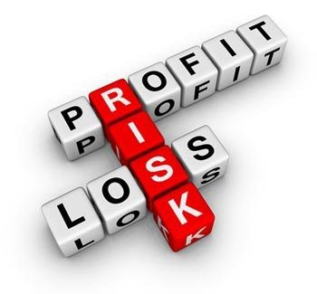
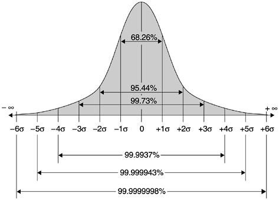

Two of the types of bets that everyone has access to making.
Investing: The payout will usually come after a longer time period. The chances of a positive return in investing can be swung in your favour if you’re making smart investments.
Casino Gambling: Putting money in a box. It either disappears or gives a payout. The odds are nearly always against you, unless you’re a winning poker player (which we’ll cover later). There are many forms of gambling, such as day trading, sports betting and buying lottery tickets, etc. We will be focusing on casino gambling for the purpose of this article, although it is a representative of gambling generally.
What Does Investing And Gambling Have In Common?
- You are risking money.
- You are making decisions: either on bets or investments.
- There is no guarantee against losing. (This is even more true for gambling than it is for investing.)
- You are able to withdraw your bank-roll and cash in.
The similarities end here. Which path you choose will determine your long-term results.

Time Bound Vs. Non-Time Bound
Investing or stock trading shouldn’t need you to be there after making the initial purchase. Investing usually doesn’t require you to hang around and proactively make decisions. You can simply place your big bet (a.k.a. your investment) and walk away — leveraging outside forces to make the money for you.
Investing should also be “time rewarding”: After you’ve made the initial investment, the more time that you stay invested the more returns that you should reap.
Casino gambling requires you to constantly be placing bets. This is true whether you’re playing roulette, blackjack, baccarat, or craps. The rounds are usually over in less than 40 seconds so you’ll need to either walk away with a set amount won or lost, or continue to bet for the possibility of winning more. Casino games are also very fast paced, maximising profit for the casino at your expense.
Availability Of Information
In investing, there is free and easily accessible information on company’s stocks. They’re offering you all these resources completely free of charge. These stock charts usually help you make a decision about buying or selling.
In poker, knowing what your opponent’s betting behaviours are allows you to gain an advantage over them. However, the only way to find their betting patterns for the last 20 hands is if you are actually at the table watching. This usually means that you’d have to be playing at the table yourself and therefore this information isn’t coming free of charge.
Risk Management Strategies (Minimise Losses)

Investors have strategies to mitigate risk:
- Companies can offer the ability to offload stocks to other buyers if they quickly fall below a certain percentage . You’ll then receive back the majority of the money you bought them for.
- Stop-loss functions can automatically sell your share if it falls below a certain range. This allows you to be hands off with your investment, and not needing to watch over it like a hawk.
Casino gamblers don’t have these options. Casinos are maximising on your loss which equals more money for them. Casino betting is REALLY betting 100% of what you put in, you’re not getting one dime back if you lose. Some might say insurance in blackjack or spreading out your betting in roulette are risk mitigation strategies. But, at the end of the day, all these bets are a net loss for the player. There’s no true risk mitigation strategy that gives you a security net for potential losses. While poker does have a rake back system on Pokerstars, it’s only a small percentage of the rake you actually pay.
Expected Returns
“An investment is simply a gamble where you’ve managed to tilt the offers in your favour” (Peter Lynch). This is true - if you’ve calculated a 40% chance to make a 350% return on your investment, then you should definitely invest. If there are multiple investment opportunities with the same odds then the more of these opportunities, the better. The 60% of investments that fail won’t matter because you’re making all the money back plus more from the winning 40% that give 350% return. Making good investments based should always be off facts. Hype & Ponzi schemes like the recently imploded Bitconnect made many con artists disgusting amounts of money. There were some YouTubers making hundreds of thousands off Bitconnect affiliate referrals, including CryptoNick a 17 year old "investment advisor"🙄. Furthermore, stocks have dividends. This means that even if you sell them several years later for the same price at which you bought them, you’ve still reaped dividends over a period of time.
Be aware that day traders usually don’t have such a predictable return. Brad Hill compares day traders (who as a group are considered distinct from investors) in the financial market to spectating sports.
- There is a move between observer and participant (namely when you put in money).
- You bet on star players in the same way that you might bet on key stocks.
- In both, you are making your decisions based off of news stories.
Gambling in the casino is a straight-up losing money game. All games are designed to make the casino money. Even when finding possible ways to beat casino games, the casino can quickly modify the rules and gain their edge back. For this reason, counting cards in blackjack has died out; automatic shuffling machines move the edge back into the house’s favour or, at the very least, ensure that the player can’t make a profit. Here is a quick list of casino games’ house edges if you play optimally:
- Craps = 0.3% house edge.
- Black Jack = 0.4–0.5% house edge.
- Baccarat = 1% house edge.
- Roulette = 2.7–5.2% house edge.
I have broken this down more extensively on Quora.
Maximum Payoff Potential
Venture capitalists usually lose the majority of their investments, but when they win the payout is large enough to makeup for the loss and more. Let’s say 90% of companies they invest 20,000 dollars into fail. They lose the whole 20,000 from the failed companies. But if even 5% of companies blow up, and create millions of dollars in revenue, the investors take a huge cut. Let’s say they invest in for 15% of the revenue, and the successful company’s revenue is 8 million dollars that year. They get 1.2 million of that, taking 20,000 to 1,200,000 (60:1 payout across one year). They’re winning all their losses back from the failed companies, and making a fortune on top.
Many games in the casino have 1:1 payouts, but all of these bets have a slight house edge. In general, the best bet that you can do is on the craps table’s ‘don’t pass line’ and putting maximum odds behind it. The house advantage on this is close to zero (0.3% depending on the house rules). Even with the best bet in the entire casino, in the long term you have no chance to make money. Bets that pay 2:1 and higher may sound better, but the casino mathematicians have already worked out the probabilities. You’re still losing several cents on the dollar, for every round of betting. The 68–95–99.7 rule (or three-sigma rule) helps to illustrate how your chances fall to zero over a long enough time period, i.e, as rounds increase.

Even though some of these games have larger payouts, they should not be confused with the potential payout of investing, especially for games like Roulette where the payout is 35:1.
What About Poker?
Poker is a unique game in that you are engaged in playing against other players. The house takes a percentage of the pot (the “rake”). This is their built-in edge. After that, it’s just you versus your opponent (a.k.a the other players). Firstly, when learning poker, it’s best to start with a play money poker app. Eventually when you can consistently out-play your opponents, it’s time to raise the stakes. If you are playing poker to become better, and eventually become a winning poker player, this could be a great investment for your overall career development as there are many invaluable lessons to be learnt through playing poker. But remember, even though you can guarantee winning over a period of time, you still have to be actively placing bets to have this stream of income. You also have to deal with the inevitable up and down swings. Having said that, I still strongly recommend learning poker. Poker is like gambling and investing in one. It’s more worth learning for the lessons it teaches even though it lacks benefits of investing like being able to receive money passively. You may hear your family or friends say that poker is a waste of time and you’re just gambling. However, there’s so many ways poker can help you succeed in life. For this reason, I believe that it is a must learn, especially if you are starting a business.
Final Note
At the end of the day, gambling, stock trading, and investing, are only phrases. Every bet/investment has a different nature, and they’ll all involve some risk. Regardless of whether it is in the casino, stock market or race track that you are putting your money in, the risk won’t completely removed. You need to take full responsibility for every investment bet you place. While other people can guide you in the bets you should be making, it is not their money to put in - It’s yours. As soon as you sell that share, buy a crypto currency, or bet red on roulette, you have to surrender to the possibility of losing that money. This is where many of the people who invested in Bitconnect went wrong. They were relying on the Youtubers to have the right financial advice for them but end of the day they needed to take responsibility for their own investments.